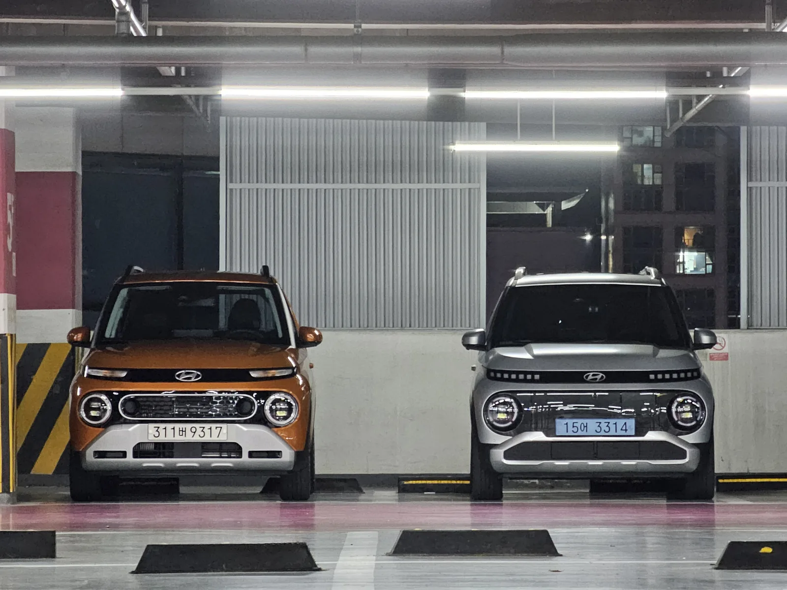

▲ 현대 캐스퍼 일렉트릭. 오너 282명의 실사용 후기를 종합했다 ⓒ 현대자동차
경형 전기차는 태생적으로 배터리 용량과 주행거리에서 타협이 필요하다. 그런데 캐스퍼 일렉트릭 오너 282명이 남긴 실사용 후기를 모아보면, 이 타협이 예상보다 만족스럽다는 반응이 많다.
1. 세 가지 트림 — 배터리부터 다르다

▲ 캐스퍼 일렉트릭. 트림마다 배터리 용량과 편의사양이 다르게 구성된다 ⓒ 현대자동차
캐스퍼 일렉트릭은 '프리미엄(기본형)', '인스퍼레이션(중간)', '크로스(최상위)' 세 트림으로 나뉜다. 프리미엄은 42kWh 배터리로 환경부 인증 약 278km를 주행하고, 인스퍼레이션부터는 49kWh 배터리가 적용돼 인증 주행거리가 약 315km까지 늘어난다. 단순히 배터리 용량만 다른 것이 아니라 편의사양과 외장 디테일도 트림별로 갈린다.
2. 오너 282명이 말하는 공통 장점

▲ 캐스퍼. 오너들은 넓은 실내 공간과 넉넉한 체감 주행거리를 공통적으로 꼽았다 ⓒ 현대자동차
헤이딜러가 수집한 282명의 오너 후기를 분석한 결과, 가장 많이 언급된 장점은 두 가지였다. 하나는 체감 주행거리가 생각보다 넉넉하다는 점이고, 다른 하나는 경차인데 실내 공간이 좁지 않다는 평가다. 경형 SUV 특유의 박스형 실루엣이 실내 거주성 확보에 유리하게 작용한 것으로 풀이된다.
3. 추천 트림 — 왜 인스퍼레이션인가

▲ 캐스퍼(왼쪽)와 캐스퍼 일렉트릭 인스퍼레이션(오른쪽). 두 모델을 나란히 보면 그릴 유무 등 디테일 차이가 뚜렷하다 ⓒ CarPrism
여러 리뷰와 커뮤니티 의견을 종합하면, 실구매 시 가장 많이 추천되는 트림은 인스퍼레이션이다. 최상위 크로스 트림만큼의 프리미엄 사양은 아니지만, 프리미엄 대비 늘어난 배터리 용량(49kWh)과 인증 주행거리(315km)를 갖추면서도 가격 상승폭은 상대적으로 크지 않기 때문이다. '가성비와 만족도 두 마리 토끼'라는 표현이 여러 매체에서 공통적으로 등장한다.
4. 참고할 점 — 공인 수치와 실측치의 차이

▲ 전기차 충전 모습(자료사진). 실제 주행거리는 기온·속도 등 주행 조건에 따라 달라질 수 있다 ⓒ CarPrism
커뮤니티에는 특정 주행 조건에서 511km까지 갔다는 사례도 공유됐지만, 이는 저속·평지 주행 등 유리한 조건이 겹친 특수 사례로 봐야 한다. 환경부 인증 주행거리(278km·315km)를 기준으로 삼되, 실제 주행거리는 기온·속도·냉난방 사용 여부에 따라 상당폭 달라질 수 있다는 점을 감안해야 한다.
5. 정리
체크포인트
- 캐스퍼 일렉트릭은 프리미엄·인스퍼레이션·크로스 3개 트림으로 구성된다.
- 오너들은 체감 주행거리와 실내 공간을 공통적으로 만족스럽게 평가한다.
- 실구매 추천 트림은 인스퍼레이션(49kWh, 인증 315km)이 많이 꼽힌다.
- 공인 주행거리와 실측치는 주행 조건에 따라 차이가 날 수 있다.